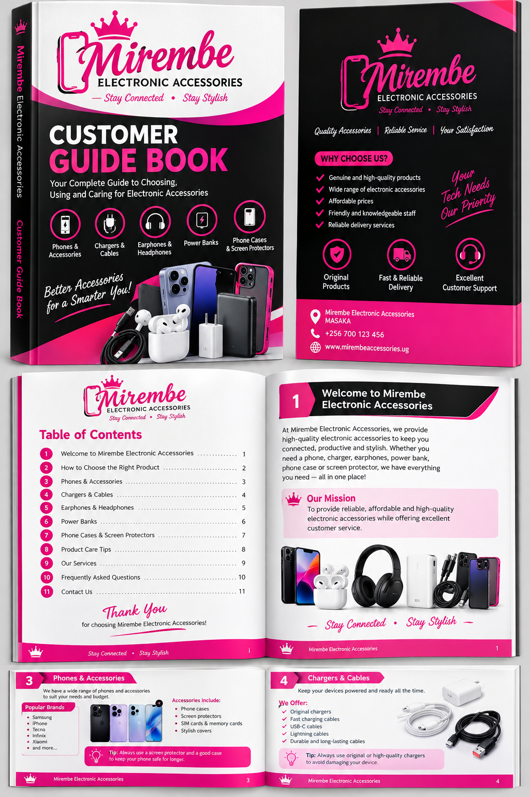

THE SMART CHOICES FOR YOUR DIGITAL LIFE
-Discover practical tech tips,accessory guides and product care devices to help you getmore from the devices you use everyday.
-Explore the latest articles
-A useful guide from the Mirembe team has been provided.
-This guide involves how to buy and choose different accessories from Mirembe Electronic Accessories with 5 minute read and product advice
-Not every chargeris suitable for your phone.Learn how to check connector type,supported charging speed,power rating and product quality before you buy.
-Find the guide and read it thoroughly for better products.
-Choose the right accessories.
-First check the compatibility,charging standards,wattage and safety features.
-Choose a reputable charger that supports your device.
How to make your earphones lat longer.
-Store earphones carefully,keep them dry,cleanthem gently and avoid pulling the cable when disconnecting wired models.
What to know bfore buying a power bank.
-Compare the capacity,output ports,charging sped,size and safety protection to find a power bank that suits your routine.

Device protection
-Choosing a phone case and a screen protector.
-Confirm your exact phone model,look for a secure fit and choose a protection that suits how and where you use your device.
-Keep cables away from heat,avoid sharp bends,unplug by holding the connector and replace damaged cables promptly.
-Keep devices within range,charge your ccessories,remove old pairings when needed and check for wireless interference.
-For more information visit our shop for electronic accessories,helpful advice and updates on new arrivals.
Mirembe Electronic Accessories.Useful technology .Everyday convinience.
HOME| ABOUT US| SHOP| COMPANTIBILITY| SUPPORT| JUORNAL| CART| OUR CONTACTS©2026 MIREMBE ELECTRONIC ACCESSORIES MASAKA.All Rights Reserved.